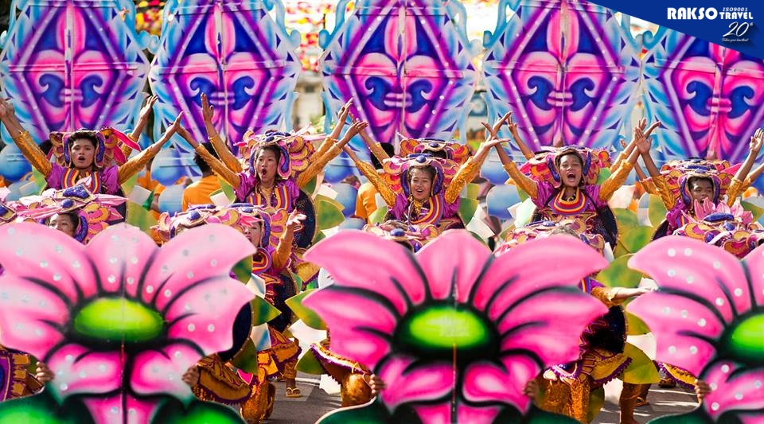
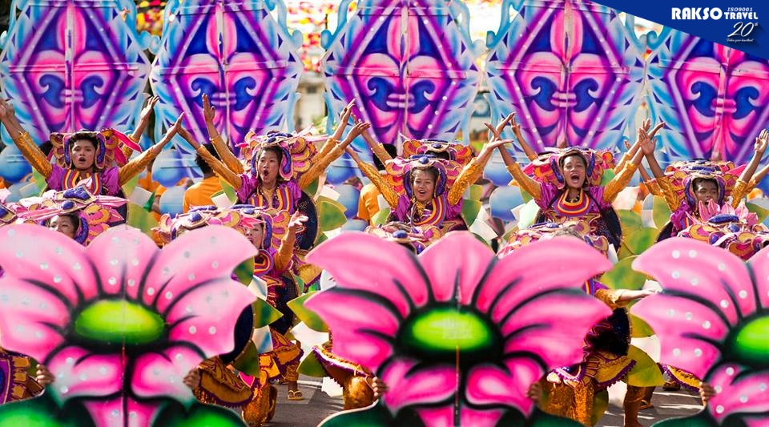

Zamboanga Hermosa, also known as Fiesta Pilar, is one of Zamboanga City’s most important festivals. It honors the city’s patron saint, the Nuestra Señora de la Virgen del Pilar whose image is enshrned in the equally historic and venerated Fort Pilar. The feast day proper on October 12 is a special holiday in Zamboanga City, and the shrine itself holds novena masses throughout the day.
 
